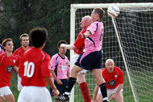
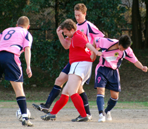
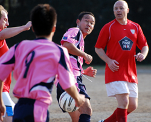

|
Oi Futo, Saturday 31st October.
 "They will definitely be taking the P**S out of us for doing this warm up" is what I said in between the inward and outward leg rotations to open up the groins as it were. Our ritual of winning every game after warming up as a team ended in a well fought game. Without too much real goalmouth action the game was played in good spirit and at a very competitive level. Overall I think the result was fair.
Credit to the Vags I think they defended very well and perhaps our decision to go with just one out and out striker proved to be a bit too cautious as their back 3 gave very little away and made life difficult for the division's top scoring striker Sho.
With the sun setting and dust in our eyes we were underway with the Blesidoe Cup a mere secondary attraction in the sporting calendar. Vags drew first blood - ball bounced towards the Panthers left back area, and with 2 defenders ahead of Muzzy there really seemed to be no danger.
Suddenly the defence stopped and appealed for a throw, the linesman (Panthers player) kept his flag down and the only switched on person was Muzzy who ran onto goal and hit a shot across the goal which then kind of spun into the far corner. The old play to the whistle saying will be repeated at this point. 1-0 Vags.
The Equaliser was a great goal. Ma turned in and out just inside the Panthers half on the left and hit a 50 yard pass into the right channel where Sho ran on and lobbed the keeper with a great side foot shot. At this point I really felt that we would push on and win the game but it became very scrappy - lots of free kicks from both sides and no real flow to the game, not aided by the pitch as often normal touches were skipping, bouncing and spinning off the surface. At times I felt the game could have been allowed to flow a little better and some of the fouls that were given were unnecessary.
Second half was a close contest, Vags should have been 2-1 up when Muzzy raced through with just Sid to beat. In the end he had too much time perhaps and Sid pulled off a great double save. Panthers created very little to be honest which was a little disappointing. We hit the bar with a free kick and apart from that only had a few promising situations which never led to clear chances.
Overall in a tight game small mistakes proved to be decisive. At the other end we probably didn't commit enough numbers forward, but credit to Vags they coped with the pace of our attacking players better than any other team so far this season, and this was our lowest scoring game for a long time.
Still after 7 games we are in a good position and the next 2 league matches are crucial against El Diego and Jetro. Next stop the Cup...
Report by Romen Barua
|